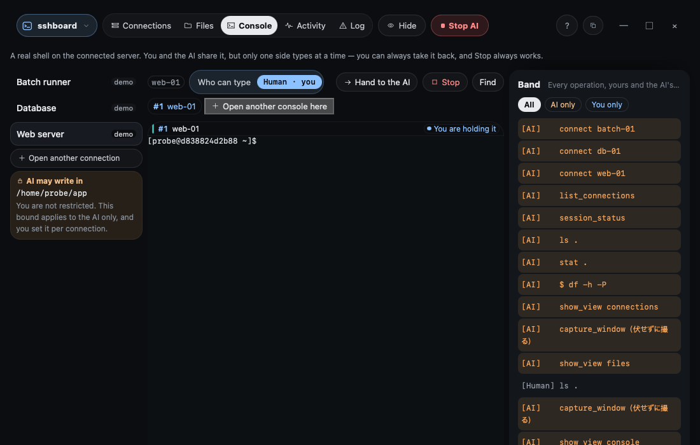
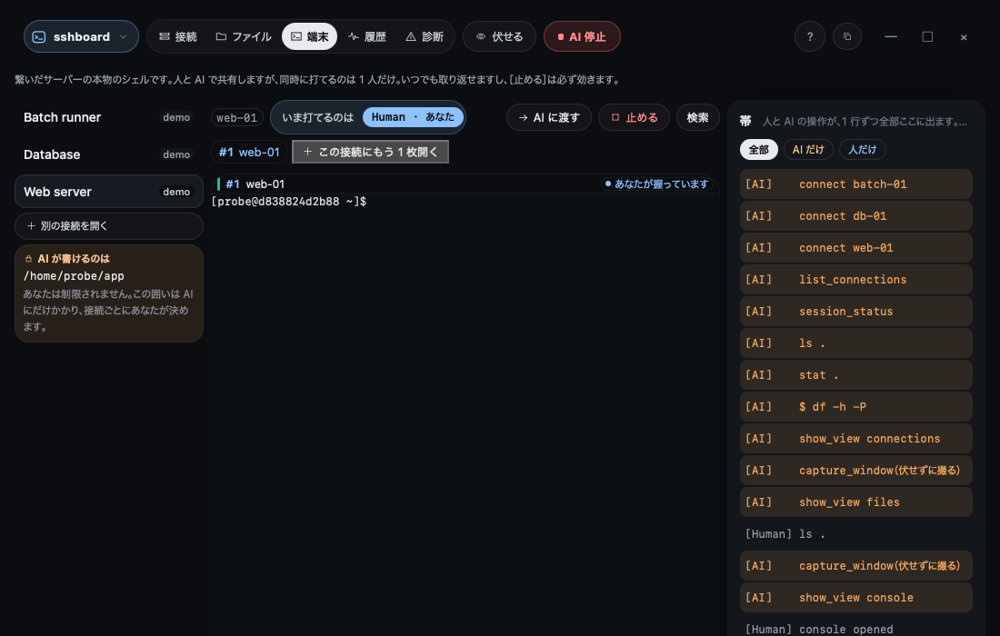

Renew the certificates on three servers today
- Uses
- One terminal per server · the shared console · read_console
- Finds
- Which of the three renewals failed, and the line in its log that says why
- How it ends
- You rerun the one that failed; the agent confirms the new expiry date on all three
Steps
- Open the three connections. Connect to
web-01,web-02andweb-03(made-up names). Each gets its own terminal tab; put two side by side if you like. - Run the renewal yourself. Paste the same renewal command into each terminal. You are typing — the agent is not.
- Ask which one fell over. The agent reads every terminal with
list_consolesandread_consoleand tells you thatweb-02failed the HTTP challenge, quoting the line. - Fix and check. You fix the web server config on
web-02and rerun. The agent reads the certificate dates on all three and reports them side by side.

Why this matters
The agent never had a shell of its own. It read what you were already looking at, so the person deciding what to run was you, the whole time.
3 台の証明書を、今日中に更新する
- 使うもの
- 接続ごとの端末 · 共有の端末 · read_console
- 見つかるもの
- 3 台のうちどれの更新が落ちたか、その理由が書いてあるログの行
- どう終わるか
- 落ちた 1 台だけを打ち直し、3 台とも新しい期限になったことを AI が並べて確かめる
手順
- 3 つの接続を開く。
web-01・web-02・web-03（架空の名前）に繋ぎます。接続ごとに端末のタブができます。2 枚を左右に並べても構いません。 - 更新は自分で打つ。 同じ更新のコマンドを、それぞれの端末に貼ります。打っているのはあなたで、AI ではありません。
- どれが転んだかを聞く。 AI は
list_consolesとread_consoleで全部の端末を読み、web-02が HTTP の確認で落ちたことを、その行を添えて言います。 - 直して確かめる。
web-02の Web サーバーの設定を直して打ち直します。AI が 3 台の証明書の期限を読み、並べて報告します。

なぜこれがよいか
AI は自分のシェルを一度も持っていません。あなたが見ていたものを読んだだけで、何を走らせるかを決めていたのは、ずっとあなたです。